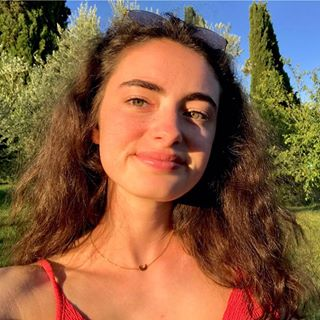

📍 bienvenue sur mon profil 📍
Louise Bousquet

18 ans
Paris
Etudes 📚
Baccalauréat ES
Etudiante à l'
ESSEC
Global BBA 1ère année
Passions ❤️
Passionnée de sport, je pratique l'équitation depuis mes 5 ans.
Je m'intéresse également à la Formule 1 et au rugby.
Voyages🌴
✈️J'ai eu l'occasion de voyager lorsque j'étais plus jeune. J'ai pu découvrir des pays d'Europe (l'Italie, le Royaume-Uni et l'Espagne.)✈️
🌍En ce qui concerne des destinations plus lointaines, j'ai eu la chance de visiter le Maroc, la Thaïlande, l'Ile Maurice ainsi que la République Dominicaine.🌍
🇫🇷En France, j'ai été marquée par mes deux séjours en Camargue, qui m'ont donnée envie de découvrir davantage cette région.🇫🇷
Réseaux sociaux